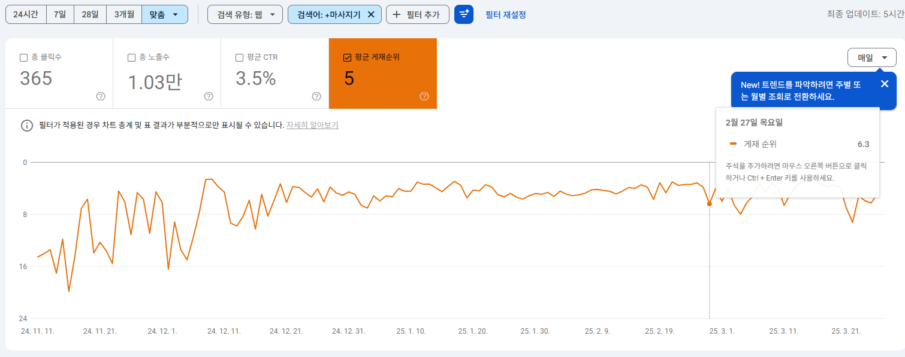
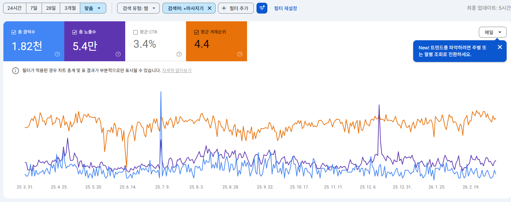

SEO 작업 전 (~2025.03.26)

SEO 작업 후 (2025.11.28 ~ 2026.03.12)

전체 데이터 추이 (2024.11.10 ~ 2026.03.12)
총 클릭수
1,820
이전 365🖱️
+1,455 click
▲ 399%
총 노출수
54,000
이전 10,300🔍
+43,700 UP
▲ 424%
평균 순위
4.4
이전 5.0🏅
0.6 상승
▲ 0.6
Lighthouse 성능 최적화 결과

최적화 전 (~2025.11.26)

최적화 후 (~2026.02.03)
성능 (Performance)
▲ 34
접근성 (Accessibility)
▲ 6
권장사항 (Best Practices)
▲ 31
검색엔진 최적화 (SEO)
▲ 15